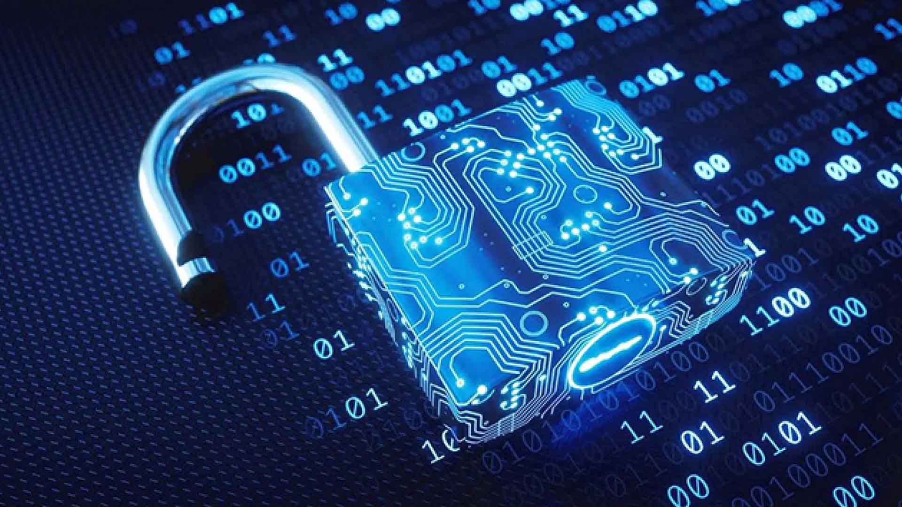

Principi di Cybersicurezza e Minacce Comuni
Nell'era della transizione digitale, la sicurezza informatica non è più solo una necessità tecnica, ma un pilastro fondamentale della cittadinanza attiva e della democrazia. Proteggere le infrastrutture informatiche significa garantire la continuità dei servizi essenziali dello Stato, delle imprese e la tutela della vita privata dei singoli cittadini. I principi cardine della sicurezza si fondano sulla triade della protezione dei dati: preservare la riservatezza delle informazioni sensibili, garantire l'integrità dei sistemi prevenendo manomissioni e assicurare la costante disponibilità delle risorse di rete legittime.
Parallelamente all'evoluzione tecnologica, le minacce informatiche sono diventate sempre più sofisticate e pervasive. Attacchi basati sul social engineering, come il phishing, sfruttano il fattore umano per sottrarre credenziali d'accesso, mentre ceppi di malware evoluti come i ransomware tengono in ostaggio interi database aziendali richiedendo riscatti economici. Comprendere la natura di queste minacce informatiche comuni permette di progettare adeguate barriere difensive e, soprattutto, di diffondere una cultura della prevenzione e della consapevolezza digitale a tutti i livelli sociali.